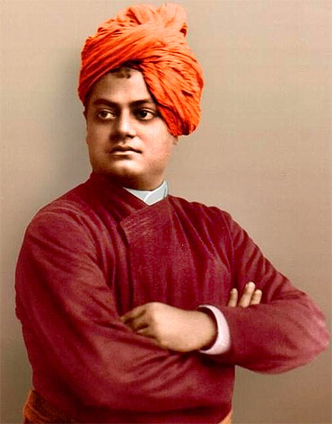

How To Find Us
Vivekananda Vocational InstituteLittle Stat School Building
Lichu Bagan, Near Khardah Police Station
P.O.- Rahara, P.S.- Khardah
Kolkata, West Bengal, India,
PIN-700118.
Vivakananda Vocational Institute is an educatoinal organization which is organized
by Khardah Engineers' Association. We are working for the next geratation's future. We are provided very high quality
of study metarial in low cost of fees. We are inspired by Ramkrishna Mission Boys' Home, Rahara and directly connected
with it. We are only concentrated on the student's demand of study. It is established at 2007 and our Government
Registration No. is 57328 of 2008-09.
What is Vocational Education ?
Vocational education is education that prepares people to work as a technician or to take up employment in a skilled craft
or trade like tradesperson or artisan. Vocational education is sometimes referred to as career and technical education.
A vocational school is a type of educational institution specifically designed to provide vocational education.
Historically, almost all vocational education took place in the classroom or on the job site, with students learning
trade skills and trade theory from accredited instructors or established professionals. However, in recent years, online
vocational education has grown in popularity, making learning various trade skills and soft skills from established
professionals easier than ever for students, even those who may live far away from a traditional vocational school.
We are providing many courses specially Electrician and Solar cource. Without this we are also offer Tailoring, CFL & LED Repairing, Fan & Motor Winding e.t.c.